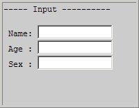
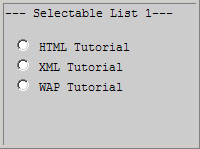
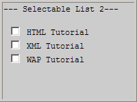
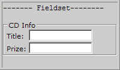

WML 输入
输入字段
可以制作让用户可输入信息的 WML 卡片，正如这个例子演示的：
<?xml version="1.0"?> <!DOCTYPE wml PUBLIC "-//WAPFORUM//DTD WML 1.1//EN" "http://www.wapforum.org/DTD/wml_1.1.xml"> <wml> <card title="Input"> <p> Name: <input name="Name" size="15"/><br/> Age: <input name="Age" size="15" format="*N"/><br/> Sex: <input name="Sex" size="15"/> </p> </card> </wml>
在您的移动电话显示屏上结果也许类似这样：
选择和选项
可以制作 WML 卡片来显示 WML 的选择和选项功能：
<?xml version="1.0"?> <!DOCTYPE wml PUBLIC "-//WAPFORUM//DTD WML 1.1//EN" "http://www.wapforum.org/DTD/wml_1.1.xml"> <wml> <card title="Selectable List 1"> <p> <select> <option value="htm">HTML Tutorial</option> <option value="xml">XML Tutorial</option> <option value="wap">WAP Tutorial</option> </select> </p> </card> </wml>
在您的移动电话显示屏上结果也许类似这样：
在下面的例子中，结果是一个用户可在其中选择多个项目的可选列表：
<?xml version="1.0"?> <!DOCTYPE wml PUBLIC "-//WAPFORUM//DTD WML 1.1//EN" "http://www.wapforum.org/DTD/wml_1.1.xml"> <wml> <card title="Selectable List 2"> <p> <select multiple="true"> <option value="htm">HTML Tutorial</option> <option value="xml">XML Tutorial</option> <option value="wap">WAP Tutorial</option> </select> </p> </card> </wml>
在您的移动电话显示屏上结果也许类似这样：
Fieldset
可以制作 WML 卡片来显示 WML 的 fieldset 函数：
<?xml version="1.0"?> <!DOCTYPE wml PUBLIC "-//WAPFORUM//DTD WML 1.1//EN" "http://www.wapforum.org/DTD/wml_1.1.xml"> <wml> <card title="Fieldset"> <p> <fieldset title="CD Info"> Title: <input name="title" type="text"/><br/> Prize: <input name="prize" type="text"/> </fieldset> </p> </card> </wml>
在您的移动电话显示屏上结果也许类似这样：
